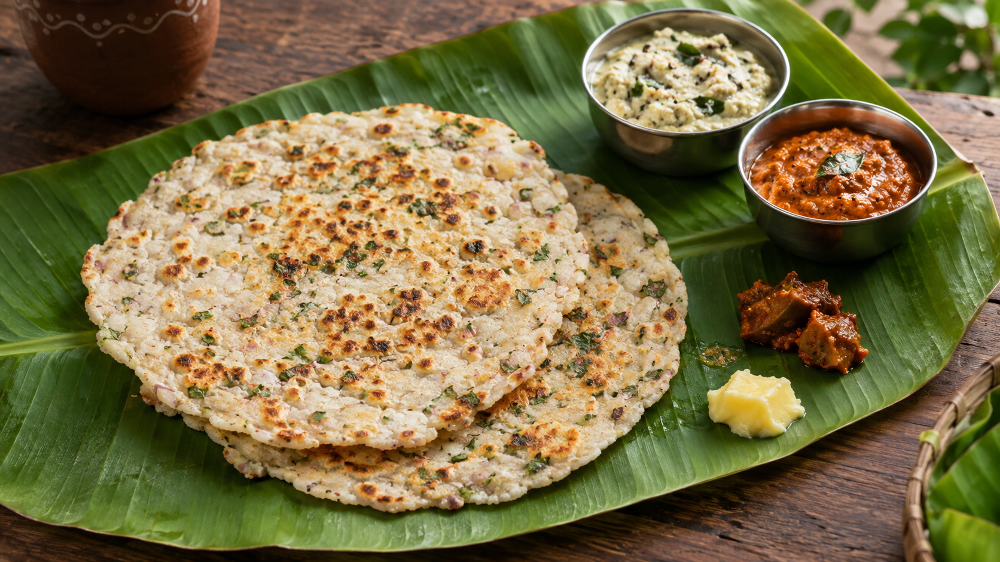
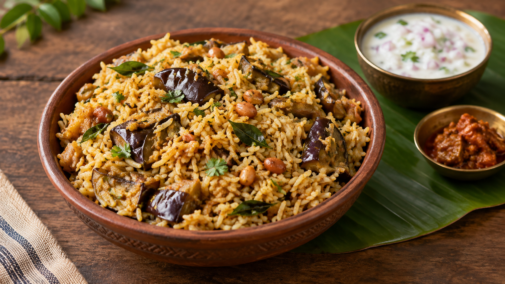
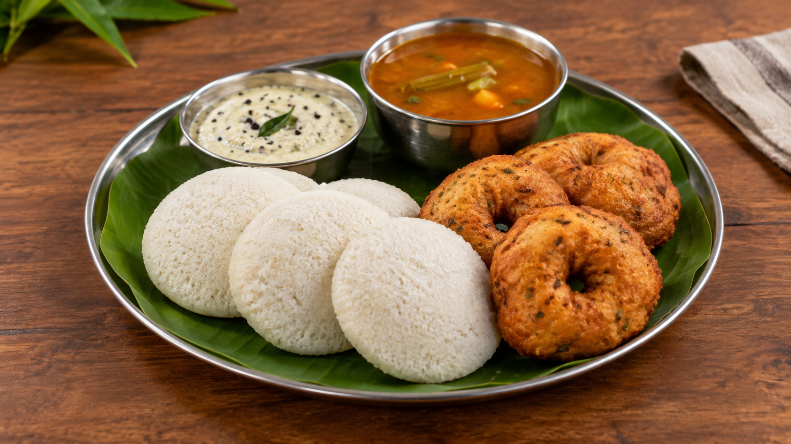
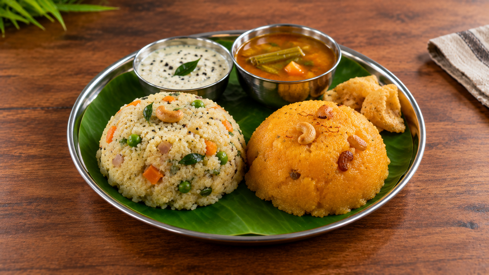
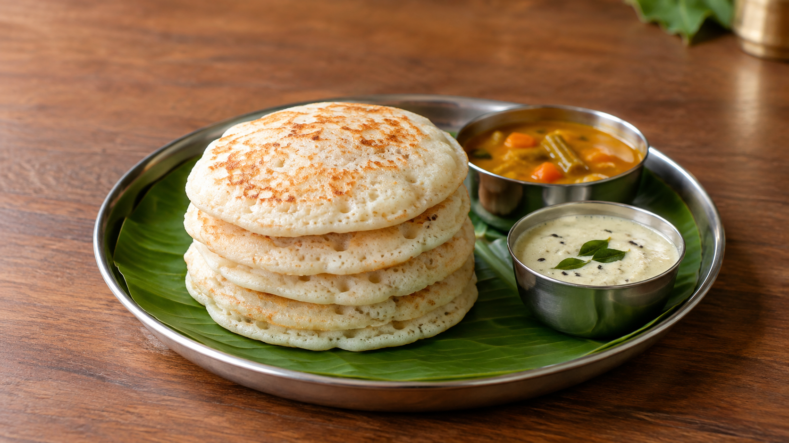
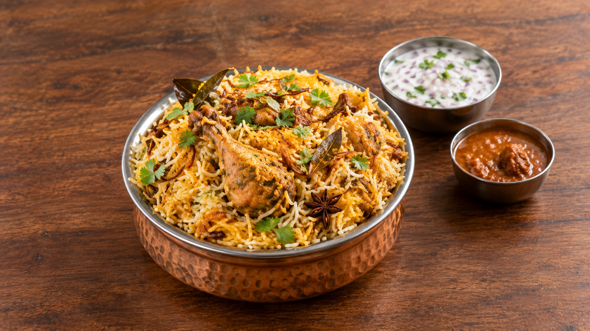
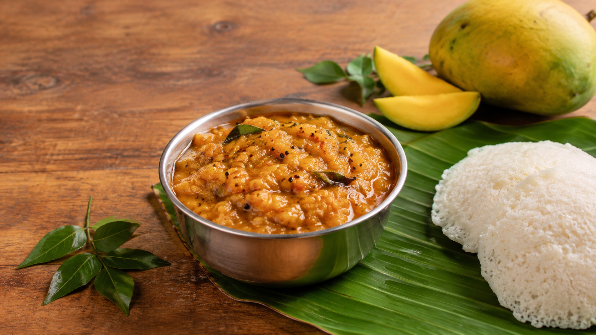
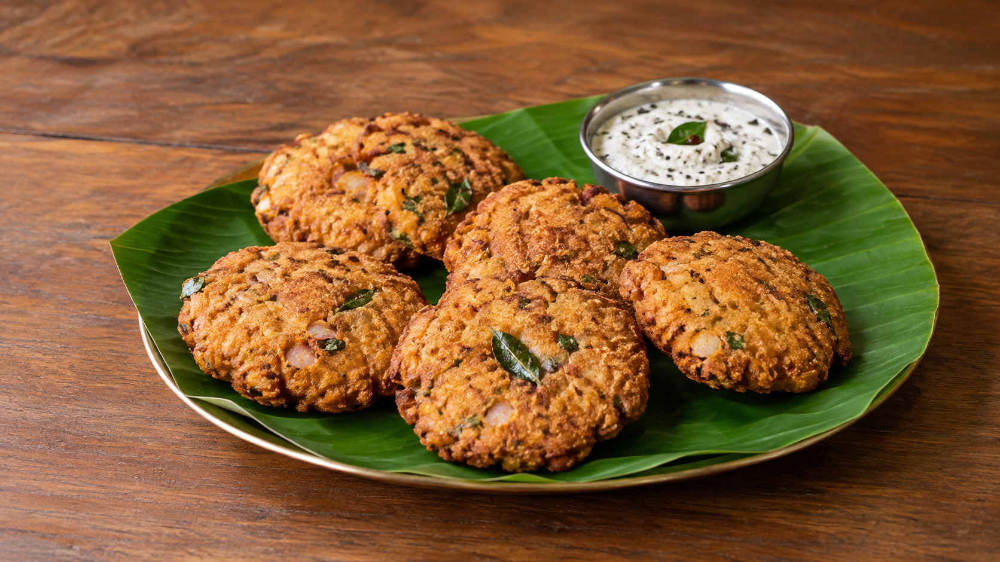

TRADITIONAL
Ragi Mudde
A wholesome ragi staple of Karnataka, traditionally enjoyed with flavourful saaru and local accompaniments.
View Details →Explore traditional flavours, comforting classics and food experiences that bring the taste of Karnataka to life.
A wholesome ragi staple of Karnataka, traditionally enjoyed with flavourful saaru and local accompaniments.
View Details →A comforting rice-and-lentil preparation cooked with vegetables, aromatic spices and traditional flavours.
View Details →

A traditional Karnataka meal served with rice, sambar, rasam, vegetables, chutneys, curd and other comforting local accompaniments.
View Details →A traditional Karnataka rice-flour flatbread, cooked with herbs and spices and enjoyed hot with chutney, butter or pickle.
View Details →

A flavorful Karnataka rice dish made with brinjal, aromatic spices and traditional seasoning, often enjoyed with refreshing raita.
View Details →A classic South Indian breakfast pairing of soft, steamed idlis and crisp vadas, traditionally served with chutney and hot sambar.
View Details →

A popular Karnataka breakfast combination of savoury Khara Bath and sweet Kesari Bath, often enjoyed together with chutney and a cup of filter coffee.
View Details →Soft, fluffy dosas traditionally served as a set, enjoyed with coconut chutney, sagu and flavourful South Indian accompaniments.
View Details →

A flavorful rice-and-meat meal enjoyed at eateries across Kolar, prepared with aromatic spices, tender meat and traditional accompaniments.
View Details →A simple and flavorful rice dish tossed with fresh lemon, tempered spices, peanuts and curry leaves, enjoyed as a light and comforting meal.
View Details →

A tangy and flavorful chutney made with fresh mangoes, spices and traditional tempering, bringing the taste of Kolar's famous mangoes to the table.
View Details →A crisp and savoury Karnataka snack made with rice flour, onions and spices, enjoyed hot with chutney or a cup of South Indian filter coffee.
View Details →